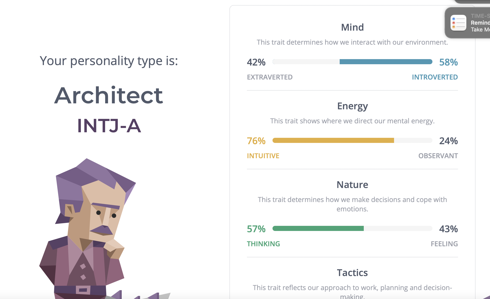

We are a dynamic team; all primarily focused on furthering our knowledge within our chosen careers and learning pathways.
Our interests align within the software space, all with chosen specialities such as Machine Learning, Game Design or Software
Engineering. While each team member seems to hold a relatively unique idea of their path in the IT industry,
all seem to align within the software space.
Our Myers brigs results provide insight into our commonalities that help provide cohesion when we work together. We all remain
curious by nature and able to provide input when necessary, playing to the individual's strengths for the whole team's benefit.
According to our MB test results, there are multiple leaders within our group.
Adam - ISTP-T
Daryl - INTJ-A
Jay - INTJ-T
Levian - ENFP-T
James - INTJ-A
Knowing more about ourselves has helped us find a place within the team and provide value. We have utilised these results to
help us work within the group, each of us finding a way to use our personality strengths to benefit the whole team.
While there will always be differences between individuals, finding common ground and a meritocratic atmosphere within the
group allows all voices to be heard. Understanding ourselves first has allowed us to work better with others; when we are first
able to analyse our personality traits, we can take steps to avoid common pitfalls regarding teamwork. Adam has utilised his
exceptional technical aptitudes to support less experienced team members, ensuring that the work gets done. Jay has
confirmed that the entire team runs on time, providing outstanding organisational skills to put the aces in their places
and make sure everyone has a role to play. Levian has utilised her communication and people skills by reaching out to her
network and arranging a skilled professional to interview.
We have all utilised our specific skill sets and strengths to ensure we complete the project. But the central power we have
all found is flexibility; working within the team dynamic has required us all to find a way to support the whole team. Daryl
and James have found themselves in flexible positions, focusing on stepping up when needed to complete report writing
or provide valuable input during team meetings.
Our choice of a significant project is an excellent example of our team dynamic; during the first meeting, we quickly moved
through our basic framework thanks to some superb planning by Jay and Adam. And when it came to the major project,
all participants’ work from assessment one was considered, and each team member took a turn to present their ideas.
We discussed the merits and our combined ability to make the project a reality as a team before finally reaching a
consensus on Jay’s original submission to make a game. It was quickly apparent that everyone enjoyed Jay’s idea,
and we all agreed that we would be capable as a team of being able to bring the concept to life.
We did not take an opportunity to select a leader or create a team structure. Instead, we spent time in open discussion
with each team member discussing strengths and weaknesses and then allocating work accordingly.
However, this has led to a reasonably organic team structure spearheaded by Jay and seconded by Adam.
Their leadership has meant we can share and discuss different ideas freely, find cohesion on one idea, and move forward
with it is a perfect example of what makes them so strong.
Click on an individual below to learn about them, their ideal job, and project idea
Adam Profile
My name is Adam Saleh, my student number is S3940024. My hobbies include playing video games
(Assassin’s Creed, Skyrim, Dragon Ball XenoVerse, Halo, Sonic), watching movies (Expendables,
Terminator, Rocky, The Mummy, Spiderman), tv shows (The Flash, Big Bang Theory, Futurama,
Simpsons, One Piece), and abridged series (SAO Abridged, DBZ Abridged, Yu-Gi-Oh Abridged).
I’ve done pixel art for a few months and started trying out blender (I made a list of hotkeys)
because I'm interested in design as a hobby. The IT jobs I'm most interested in are software
development and game development.
My interest In IT is mainly in programming, machine learning, robots, and the potential of
artificial intelligence, however my skills and experience are very little. I started IT last
year with the Cert III in IT with Tafe. After the Cert III, came the Cert IV in Programming
which taught someone who couldn’t even display “hello world” C#, SQL, HTML, CSS, and JS . I
taught myself a little bit of Python (Py game) and Java (J Frame) before starting this course.
My Myers-Briggs personality is the ISTP-T Turbulent Virtuoso, this personality type is
described as rationalized, curious, and creators, they prefer pulling things apart to put
them back together, usually better than it was before. They are known as friendly, private,
curious, overhasty and practically realistic. An ISTP’s strengths include being optimistic,
energetic, creative, practical, spontaneous, rational, prioritisation, composed, and excellent
at handling a crisis. Their weaknesses include being stubborn, insensitive, private, easily
bored, disliking commitment, and risky behaviour.
The learning style best suited to me is the pragmatist style, a style that learns best from
practical, case studies, problem setting, and discussions. A pragmatist is keen to try out
ideas/theories to see if they work, search new ideas, and take the first opportunity to test
an application. My secondary learning style, of the same score (0.250), is the reflector style,
this style learns best with paired discussions, self-analysis questionnaires, demonstrations,
feedback, and coaching. The reflector style of learning is more about observing, data gathering
and analysing than it is the practical approach.
The two workstyle tests I’ve done have indicated that I am an “integrator” and an organised
planner. An integrator’s preferred roles are problem-solving and diagnostics with a strong
preference for understanding the why of what’s being done. They are known to be self-reliant
and prefer the “plan-first” approach. The second of the tests that I’ve done indicates that my
preferred way of work is to organize and plan my work, which, as proven by working with this
team, is where my strengths lie.
For iTeam, a name I support, I should be able to help organize the work that needs to be done,
come up with creative solutions or ideas, prioritise my duties based on time and importance,
try out software that is new to me without hesitation, create creative code for the project,
and, if need be, I will discuss our course of actions if I do not agree with them. This doesn’t
mean I don’t have my weaknesses though, everyone does. As I’ve learnt from the tests I’ve done,
and personal experience, my weaknesses within iTeam might just include leaving important but
boring tasks until the end, an approach to explanations that lack a practical containing less
than ideal memorisations, and getting my tasks done early on and expecting most, if not all,
to take a similar approach.
Software Developer
The role of a software developer entails developing, testing, (and sometimes designing) a
program using one of very, very many computer & human understood languages, the role itself
is split into the languages used, for example there is a .Net developer, they create
applications using Microsoft's .Net languages such as C# and VB, a Java developer can create
applications, games, mobile apps using the language Java, a Python developer can create many
applications, like java, and uses the language Python. There are many more out there, like SQL,
a database management language, JavaScript, a scripting language that can make any website
interactive, and, while no one counts them as "programming languages", HTML and CSS are used
to develop websites. Programs are even being made to work with robots, A.I., and self driving
cars.
I'm interested in two different work pathways, software development and game development, but
my focus is on the development of software because I love the idea of being able to create
just about anything fun, useful, medical, robotic, helpful, ect. from scratch without limiting
myself to just gaming, all while at the comfort of my favorite chair. Like I mentioned above,
software development is split into the languages used for it, like C#, Java, and Python and at
this point in time I have had experience using all three of them, I've used C# during my Cert
IV of Programming to create a sample management system, I've taught myself some Java and it's
JFrame module, with it I've created a couple tutorials for myself to go back to if I ever need
to, and with Python I've used the pygame module to make a small game, the game in question needs
a little refining, but the point of creating it was to try out the pygame module. While using
all 3 of these languages I've encountered many, many code issues from syntax to run-time which
have helped me develop the skills I currently have, and with more errors along the way I have
more chances to learn and refine the way I code. I can confindently say that using all 3 have
increased my interest in the subject and have reassured me that this is the right path.
Digital Card Game
The idea I presented my group was Oblituma, a fantasy story played through a digital card game.
The story of the game is essentially about a planet that is going to destroy itself, and how
it's inhabitants attempt to save themselves. There are many methods in doing so which causes
factions to be formed, those factions are the Knights, Rune-Weilders, Gear-Borns, Elementals,
Demi-Humans, and the Undead. Each faction has a method that they believe will either save their
world or just themselves, and each faction is willing to put their lives on the line in order
to try.
The game's Story Mode would progress through the collection of notes/letters that each faction
leader would have left in order to make their side known. Each faction's story would contain
~10 notes to play through and unlock items in. Other modes of the game include Battle Mode
which sees the player going up against another, Bot Mode which would let the player go up
against a bot with any deck the player chooses to go against, and Side-Story Mode which would
function very similarly to Story Mode with the difference being that each side story is made
to allow the player to understand the lore of the world.
The skills and experience that would be required for the game are -
> Unity Game Engine
> C# Programming Language
> SQL Skills
> Knowledge of the Cloud
> Artisic Talent, preferably digital
> Musical Talent, of any instrument
My plan is that the game would runs on the Windows operating system, using the programming
language C#, and utilises an SQL database to hold all the details of the cards. The game would
obtain the details of these cards, such as name, artwork, etc. through a cloud server.
I want to create the game using the Unity Game Engine because it is a free engine that
anyone can learn to use and is able to create 2d games. The game should be easily downloadable
from Steam and connect to the database to be through the cloud.
For A3/5 the demo of the game would have been to create 2 structure decks, that would be ~60
cards total, and create Bot Mode and an opening tutorial so that the player can learn to play
the game and try it out too.
Daryl Profile
My name is Daryl (s395200), I was born in Brisbane QLD, but I grew up in Parkes NSW, a small town
with a population of around 15,000. I have three brothers and two sisters. I played rugby union during
my high school years. I left school once I completed year 10 in 2004 to join the Australian Defence
Force, Army -Infantry 1st Battalion. I was 17 when I joined and 18 on my first deployment to the
Solomon Islands in 2006, then at 19 I was deployed to Afghanistan in 2007. I like to play chess,
go fishing/camping, and spend time with my wife and two daughters. I like to watch movies and
TV series, some of my favourite movies include American sniper, black hawk down and many others.
Popular tv series I like are Vikings, the unit and game of thrones. I liked to play D& D but don’t
have the time anymore to play.
My test outcome for the Myers Brigs personality type was Architect INTJ-A. The architect's personality
type is outlined as a private individual, who thinks before they act. My strengths include being
Introverted, Intuitive, thinking, judging and assertive, these results are accurate to me.
My weakness would be playing well with others but over the years I have learned to control the
situation so I can work in teams well.
My Learning style test outcomes, Auditory: 40% Visual: 30% Tactile: 30%. This test shows me that
I am an auditory learner and I need to listen more and sit at the front of the classroom.
I am interested in robotics and A.I (Artificial Intelligence) the most, but really, I am interested
in all technology and how it works and what I can learn and do to help others with the skills and
knowledge I will gain during and after my studies.
I used the basic technology when growing up but did not really get interested in it until I was
in the Army. This is where I started to get interested in it, I learnt communications and encryptions
on military radios, which was the starting point of my interest. From that point, I started to teach
myself through books and videos. Once I left the army I dropped out of interest for a little bit
because of my PTSD (Post Traumatic Stress Disorder). When I meet my wife, I started to feel a
little bit normal again and started back on my quest to learn which became even better because
my new father-in-law was good with technology, he helped me learn to build computers. I have
worked with technology for a few years now from building computers to installing software.
I have had to use excel, outlook, Microsoft Word, and teams in my role as Stock Controller.
Iteam is an excellent choice of name and a good group of bright and intelligent people, and I feel
like we all work together well so far.
Junior Front End Developer
As Junior Front-End Developer they will be building and maintaining web applications using coding
languages such as HTML, CSS and JavaScript. They will work with the development team, UX/UI designers
and graphic designers. They will work closely with the back end and full-stack developers on web
applications to deliver consistent and reliable experience for the users. they will optimize web
design for mobile and other platforms for maximum speed. They will work with designers to ensure
high-quality graphic standards and brand consistency.
I found this job when doing research and it caught my eye as it’s a job, I could see myself doing
in the future, as I am interested in the coding languages used in this role and the challenges that
it gives with creation and maintenance. With this of this style of job if has the possibility of
career advancements and lots of room to learn more throughout this career.
Home HealthCare Automation System
This product will feature 24/7 home monitoring when you are home, this will be possible with the
smart watch features and phone application that will let the system know when you have entered or
exited your home. This system will be made using multiple Raspberry Pi systems setup up around your
home. A.I system installed to monitor and track movements and vitals and monitor body temperature
through the inferred sensors, cameras and the sensors build into your smart watch. The A.I system
will be designed to do a scan of you when it is first setup to help keep track of the right person.
This program will be designed to interact with its user, if decided to activate this feature you
could ask for weather report, call family/friends via connection to your phone through the
application provided.
During the setup you will be prompted to fill out an emergency contact section which will include
email and contact number as this will be used for one of the features of safety alerts to emergency
contact if anything happens example you fall and hurt yourself and you need assistance but cannot
get to the phone or the system picks up on you having a epileptic fit in which it will sent out an
SOS to your emergency contact and contact emergency services.
With this A.I design it will be able to learn movement patterns like the way you walk,
so if you hurt your leg, it would be able to re-adjust your movement pattern to assess if you have
injured for self and how severe it maybe. The application for your phone will be free to download,
this will feature monitoring system where you can share details like vitals and camera footage
to your emergency contact so they can keep an eye on your and know everything is ok. You can store
data of your vitals to show and share with medical professionals any time you want. This will include
24/7 technical services and constant bug fixes to make sure it runs without any problems.
The application is yours and no one can see any information as we will provide an encryption to stop
anyone from to the access it. The Raspberry Pi system will feature cameras and sensors to which you
choose where you want the cameras setup and the sensors, this will come in different size packs to
suit different sized homes so if you want a camera in every room but still want your privacy in
certain rooms then you can set that camera up to sensors only, that way it can still pick up if you
have a fall for example. The watch you will be able to use any smart watch that can access the
application to link up and relay data it collects like rise in heart rate or your sleep cycle,
this in turn will help the A.I learn and monitor more accurately to these results and patterns
relayed to the system.
Jay Profile
My name is Jay Meredith, my student number is S3951987. My passions are Game Design, 3D art, and music. I have a Game Design Certificate from JMC Academy, and I also hold a Certificate III in Retail. My favourite hobby aside from the three I have previously mentioned was being the leader of a competitive Counter-Strike team. I backed the idea for the team name ‘iTeam’ because I like the technology theme that is incorporated into the name.
The Myers-Briggs Personality Type Test gave me the INTJ-T personality type. This personality type indicates that my strengths are logical thinking, intuition, and determination. It also indicates that my weaknesses are arrogance, over-criticism, and dismission of emotions. My strengths are going to provide the group with logical problem solving, confidence in decision making, and motivation. My weaknesses are going to need to be kept in check or we may have problems with team chemistry and team morale.
The online learning test indicates that I learn based on primarily logic and, learn well in group environments or in solitude. The test states that my learning weaknesses are physical learning, and sub-par visual learning. My strengths are going to be helpful to our team because my logical, adaptable learning style will be great for both solo study and group study. My weaknesses may cause issues if we must learn physically or visually.
The workstyle test that I chose indicates that my strengths are organising and planning, managing projects, and developing communication strategies. The test also indicates that my weakness is likely to be an overfocus on the administrative side of working as a team. My strengths will help us coordinate as a team but, my weakness may result in me playing catch-up with my teammates.
In conclusion, my strengths will provide the team with a logical thinking decision-maker who will help our team with administrative skills, determination, and an adaptable learning style. My weaknesses, on the other hand, may cause issues with team chemistry, learning through physical or visual mediums, and an overfocus on administrative tasks. With my strengths and weaknesses considered, I believe I will help this team thrive. To help this team thrive, I must remember my weaknesses and be constantly aware of them because once they can be suppressed, I will be a great teammate.
Software Engineer
I would love to be a software engineer in the future. I love the idea of utilising both my logical and creative sides to design and improve new software. I would love to use and develop my written and verbal communication skills, problem-solving skills, and programming skills. Software engineering caters to many of my qualities as highlighted in its industry data. Another amazing facet of software engineering is its amazing demand score, which makes it a practical career to shoot for.
Python Made Game
Imagine walking through a futuristic spaceship, crawling with various types of dangerous aliens, initially armed with only your pistol. Fighting wave after wave of aliens, who attack you in different ways. A race may use their speed, power, or stealth to attack you, but whatever method the alien race uses, there will be another race in the next room who will have a different fighting style, always keeping you on your toes. Just when you think that the fight will be over, an alien race’s leader breaks in and makes things even more difficult. This is the feeling my project idea captures.
James Profile
My name is James (s3936965), and I have worked as an IT technician for
several years before moving into operations. At present, my hobbies include
3D printing and CNC machining. Something I have always enjoyed is gaming mostly
on console and mobile. I have a good fundamental understanding of IT hardware,
but I have always felt my software understanding could be better. I would love to
develop skills that would allow me to produce mobile apps, but I have recently taken
an interest in machine learning and AI (Artificial Intelligence).
As a member of iTeam, I am looking forward to sharing my skills and expertise and
learning some new ones from fellow team members.
My test outcome for the Myers Brigs personality type was Architect INTJ-A. The architect's
personality type is outlined as a quiet individual who values organisation and rationality,
these values I align with. Individuals with this personality type can be viewed as ambitious
and assertive; however, to work within a small team, I believe it is beneficial to be flexible
and play to the entire team's strengths rather than one individual.
My Learning style test outcomes, Auditory: 15% Visual: 55% Tactile: 30%. This test aligns with
what I know about myself and how I learn. While my auditory percentile might indicate I am not a
good listener, I believe this is more specific to how I can take in new information. I am much
better when I can be shown something rather than told. The refinement of these skills comes from
hands-on experience of the tactile branch of the above outcomes.
My creativity test score was 68.8, a remarkably arbitrary number assigned at the end of a creativity test.
However, within that number were indicated certain aspects of creativity that I was more proficient at, such
as complexity or the ability to take in and manipulate large amounts of data. Paradox, the ability to accept
and work with contradictory statements and curiosity, is the desire to change or improve things that everyone
takes for granted.

Machine Learning Engineer
Machine learning is a field that I find interesting, dealing with large data sets and teaching machines
how to think and interpret data in oversimplified terms. I find this fascinating because, in my head, it is about
providing context to data and teaching computers how to provide this context. I love puzzles and enjoy seeing
patterns that align with interpreting large data sets and giving context to the data. This is also something that
aligns with the role of a data scientist. However, the machine learning engineer is more focused on the code aspect
of the interpretation. The data scientist will deal primarily with the data, and the machine learning engineer will
write the code that interprets the data.
The primary duties of the above role focus mainly on coding, deploying and moderating Machine Learning code. This
involves communicating with the data scientists and documenting ideas and processes involved in the code creation.
They reference the Agile framework in the job ad, which refers to a framework for managing, planning and executing
work.
They require experience in Microsoft Azure, a cloud computing service, and multiple apps associated with the service,
including Azure Databricks, Azure Machine Learning, Azure Kubernetes. Most of these services revolve around large
data sets and provide computing power to analyse large data sets that would be beyond the abilities of your primary
workstation.
They also focus on proven ability to work with data scientists, architects and platform engineers. Most of the work
and communication with these other professionals revolves around MLOps (Machine Learning Operations) and ML code.
Finally, practical experience in Python, a coding language, and Apache Spark, an application for managing large sets.
Most of the above are far beyond my current skillset; I have no experience in Machine learning. I have used Microsoft
online cloud computing tools such as Microsoft BI (Business insights), similar to Azure but with very different
implementation. I also have essential experience coding some C++ and Python, but I would need a better grasp to
communicate with the other mentioned professionals.
The Best way for me to obtain the nessasery skills to apply for a job like the one that is mentioned is to continue
my studies; achieving different experience around the field and preliminary use of the products mentioned in the app
will provide me with a great foundation to begin to pursue a job like this. I will also need practical experience
working with professionals mentioned in the ad, which will come from finding work experience within the same field,
potentially as an intern, or working in a lower set role, before applying to a job like the one mentioned.
Neighbourhood Item Share App
Overview:
We all live in communities both online and physically, and between all members, there exists an
overwhelming amount of tools and skills, most of which are rarely tapped into. Today's world,
thanks to information technologies, is amazingly broad. We are all-access a world of skills and
people that would have seemed far out of reach not so many years ago. Neighbourhood Supply is
about communities pooling resources from a drill, mower, 3d printer or any other tool or skill
that could be used in your local area. People can list items or abilities available to borrow
or rent to their communities.
Description:
Have you ever found yourself in a position at home where you need, say, a drill? Buying one seems
a little unnecessary this is the first time you've needed one and probably won't need one again
for a while, so you open the Neighbourhood Supply app, as it turns out your neighbour two doors
down as a drill you can borrow for $5 a day. To rent the drill, you need to be a member will a
credit card or debit card attached to the app; you are told that the replacement fee for the
drill is $99, which is held until the drill is returned. You are charged $104 and refunded 99
dollars when the drill has been returned in good condition.
This same model could also apply to skills and general labour tasks, think of washing as an example;
you might have a broken washing machine or dryer, perhaps you need someone to iron your shirts.
While you could take them to the laundry mat, you jump onto the app and find out Terry will do
a bag wash for $5. He lives two streets away, which seems a bit far for you; after all, you don't
want to drive there or walk a bag to his house, but then you notice he will pick up the bag and deliver
it for another $5.
The idea here is that it connects people and provides community value. While most other similar services
and apps focus on social as a driver, this will primarily revolve around commodities found within our
communities. This type of local venture is becoming more and more critical as the world continues to
change. Issues such as inflation are driving the price of most goods up due to how our economy is structured,
but by using the power of information technology, we could help find some of those small-town values our world
was built on.
Keep in mind that while this app will not be targeted at professionals, it will not stop professionals that live
in your local radius from promoting their services potentially at a discounted rate after all you are neighbours,
but primarily focus on the ordinary people skills set or no training required. The app, in its essence, is not designed
to compete with Facebook or Neighbourhood, two apps that promote social connection as a foundation both on a local scale and
offer similar services as an add on but offer the services as a primary feature and social link a secondary benefit to
the user. The most crucial part of structuring the app will be defining a radius for local connection for most services
and rentals. A maximum of 3km should be applied, but for some speciality services or rentals, up to 5km could be suggested,
especially if the user is prepared to travel. Allowing the user to apply a radius of their own is also an option.
Levian Profile
My name is Levian McCarthy-Atkinson, my student number is S3951992., I'm an Indigenous Transmasc Nonbinary Individual with a love for D&D, gaming, and art. When creating art, I like to work in the mediums of 2D digital, watercolour, gouache, and inks, though I have experimented with many different mediums in my time.
In the past I’ve studied a few different things and have ended up with a certificate III in tourism and another certificate III in retail finance from my time working for the Commonwealth Bank.
My Myer’s Briggs test outcome was ENFP-T, the campaigner. Campaigners are described as outgoing, with an upbeat approach to life. They are characterised by their creativity and meaningful connections with other people.
My Learning styles test indicated that I have a trimodal preference as three of my preferences (Kinesthetics, Visual and Aural) scored similarly. This aligns with what I am aware of as I know depending on the context, I usually require at least two of these modes to successfully retain learning. This often means that I am quite flexible able to learn from multiple different methods.
Generalist Programmer
Levian desires to become a generalist programmer. Generalist programmers require a brilliant combination of IT-specific skills (hard skills) and general skills (soft skills). Generalist programmers can be broadly defined as “all-rounders” that need to know both frontend and backend programming languages to succeed within their role. With their generalistic approach to programming considered, they will need to have effective communication skills to propel collaboration with a wide range of developers and IT-engineers.
My Dice - Dice Creater App
Ideal Job Comparison
Our group has a variety of ideal jobs ranging from Machine learning engineer, software engineer, software developer,
generalist programmer and front-end developer. If we start with a look at similarities of these jobs starting from the
programming languages used such as python as it would be used by all jobs in the list from basic usage to advance usages
in the job roles, such as developing an app or software for the software engineer or developer or basic algorithms for
machine learning, to developing a game for a generalist programmer. Front end developer uses mainly HTML, CSS and
JavaScript as they develop the front end of a webpage or application.
Software Engineer builds programs for hardware, operating systems and networks, Software Developer designs and implements
new or modified software. Front End Developer creates the front end of a web service or application, visual elements that
users see and interact within a web application and are back up for back-end developers. Machine learning engineers develop
self-running AI software to automate predictive models for recommended searches, virtual assistants, translation apps,
chatbots, and driverless cars. They design machine learning systems, apply algorithms to generate accurate predictions,
and resolve data set problems.
Software Engineer uses programming languages such as C++, SQL, Java, and Python, while Software Developers use C#, SQL,
Java, .Net, and C. Machine Learning Engineer use SQL, Java, Python, C++, R, and JavaScript. Front-End Developer uses SQL,
HTML, CSS, and JavaScript. Generalist Programmer uses C++, C#, HTML, Java, and Python.
Software engineer, software developer and machine learning engineer job applications require some form of Tertiary
qualification like Computer Science or equivalent degree and work experience to get a job, while generalist programmer
and front-end developer required only experience. Generally, these jobs are looking for a minimum of 2 years of
experience.